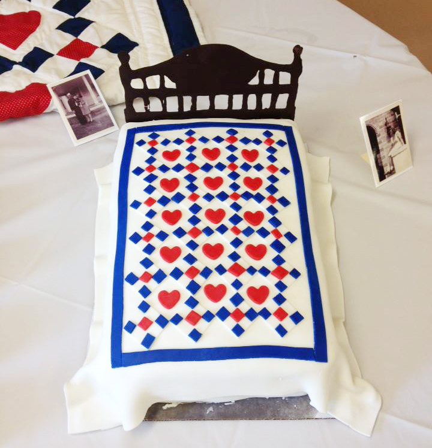

Cakes
Through a minor obsession with cake shows, I have experimented on friends and family with my baking creations. Thankfully no one has died yet and I get to have a good time trying out new things! I bake pretty much weekly but do not take pictures most of the time so unfortunately my gallery is pretty small.
My grandma is a frequent victim of recieving cakes she didn't ask for. The gallery below features a few of the cakes I have made for her.

- 
Our family is kind of out of control large, so we use Grandma's birthday as an excuse to have family reunions. This was for her 91st birthday. She has sewed quilts her entire life and every family member has received one.The quilt cake was based off a quilt she made for many family members, so I decided to make it become a cake.
Last year was my Grandma's 92nd birthday and somehow over the years aquired the nickname Grandma Sunshine
, so naturally she needed a sunshine cake. Her favorite shirt is a black and white paisely print so that got thrown on there for an added bonus.